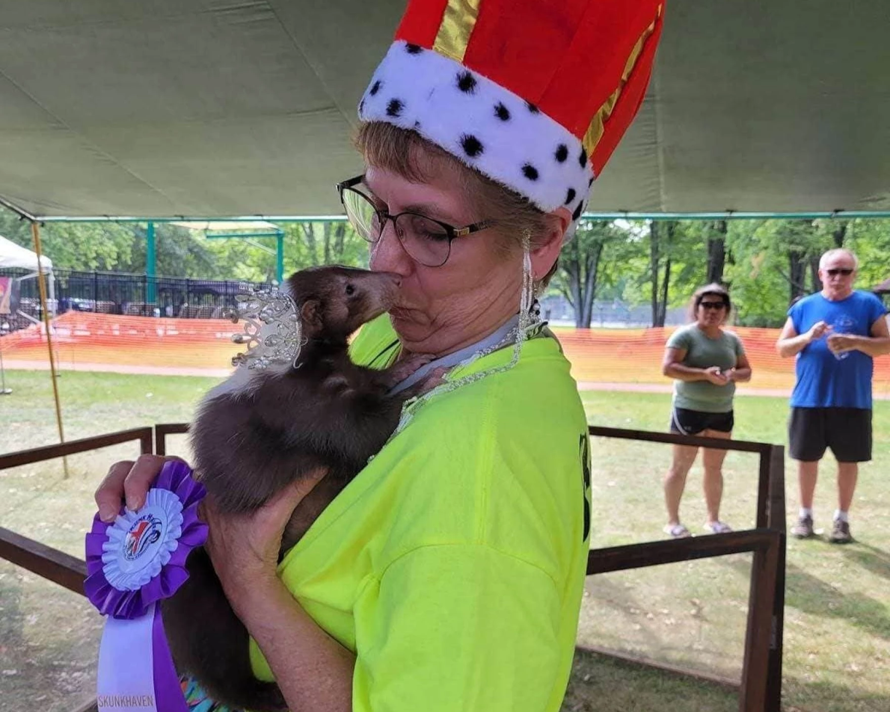
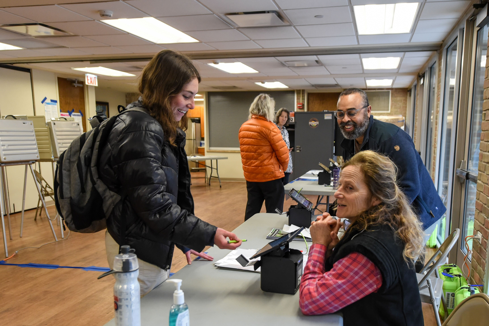

Audio reporting is a way to immerse audience members in the story by allowing people to tell their stories in their own voices. I have reported both short news packages and longer form podcast stories. I have bylines in The Ohio Newsroom, The Daily Northwestern and nuAZN Magazine.

Photo courtesy of Deb Cipriani
Skunk lovers have a stinking good time at Ohio-based Skunk Fest
The Ohio Newsroom, Sept. 12, 2025

Photo by Dalton Hanna for The Daily Northwestern
Everything Evanston: Voters use social media, community sources to decide ballots
The Daily Northwestern, April 2, 2025
Illustration by Jackie Li for nuAZN Magazine
nuAZN Magazine, Dec. 11, 2024